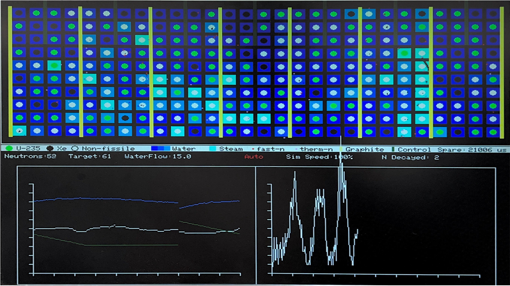
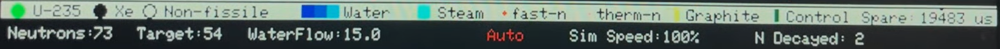
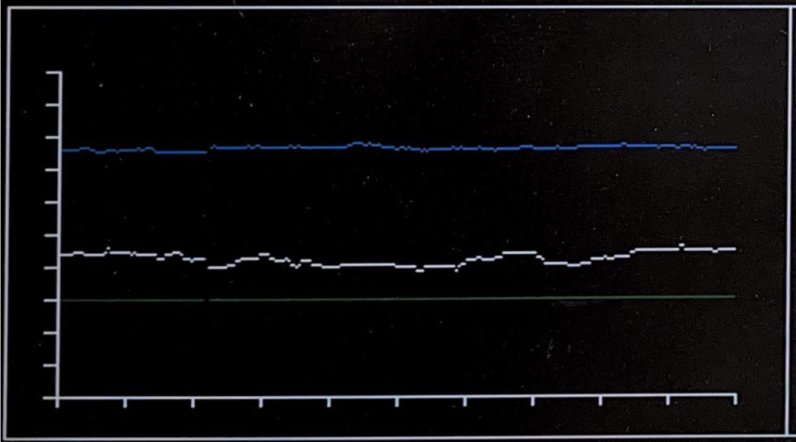
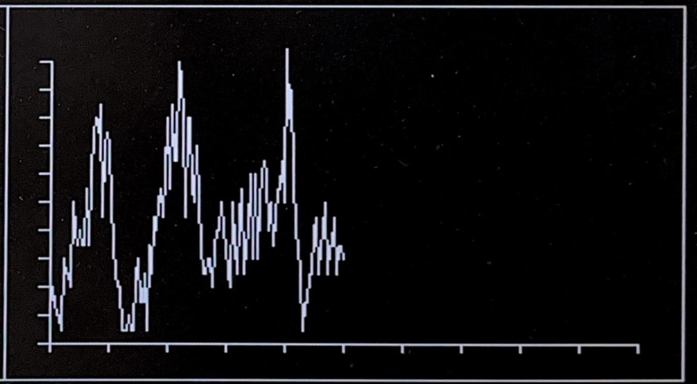

and another group member ECE 5730 Digital System Design using Microcontrollers
Cornell University
Software Design
Core 0: Simulation
All parts of the nuclear fission simulation are handled on core 0 of the RP2040. The completed simulation is fairly complicated with multiple aggravating and inhibiting factors that work to sustain a fission reaction. We will break down the simulation into parts, building up to the final result.
Basic Components: Neutrons and Nuclei
In its simplest form, the fission reaction simulates neutron particles that move around on screen. These neutron particles move in a straight line, interacting with other particles and objects, driving forward the nuclear chain reaction. Each neutron in our simulation is represented by a struct that contains: the x and y coordinates, the x and y velocities, an active/inactive state, as well as the energy of the neutron. A struct array is initialized to contain 2000 of these neutron particles, the maximum number of neutrons in our simulation. Most of these neutrons lie dormant during the simulation. Thus, the active/inactive state is needed to keep track of these unused neutrons. Each neuron is initialized to a velocity of 2 in a random direction. This is done through helper sine and cosine functions, both of which use a precalculated sine table of 256 values between [0, π/2). In total, there are 1024 possible different directions for each neutron. Finally, the energy state is initialized to 24000 and the neutron is removed from the simulation when it reaches 0. There are various mechanisms through which the neutron’s energy is reduced, transitioning from a fast neutron to a thermal neutron. The significance of this transition will be explained a little later.
The nucleus is the other basic building block needed for our simulation. Each nucleus struct contains: the x and y coordinates, the type which indicates Uranium/Xenon/non-fissile material, and the energy level of the water surrounding the nucleus. The water will be discussed later. The nuclei are arranged in a 28 x 10 grid, for 280 cells in total. Once again, we defined a struct array of nucleus structs to manage our grid. In addition to this array, we have three separate arrays: three separate lists of indices corresponding to Uranium nuclei, Xenon nuclei, and non-fissile nuclei. These lists allow us to quickly find the locations of Uranium/Xenon/non-fissile cells whenever we need, rather than iterating through all 280 nuclei. While this is duplicate information already encoded in the type field of the struct, they help meet the crucial 30 fps timing deadline. In this case, we considered the trade-off in memory efficiency worthwhile.
With the neutrons and Uranium nuclei, it is possible to implement the most basic backbone of our simulation. When a collision between a neutron and Uranium is detected, a fission reaction occurs, splitting the Uranium into smaller fragments. We represent this process by a conversion from a Uranium nuclei to a non-fissile nuclei. In addition, we update the x, y coordinates of the neutron to the center of the nucleus, choose a new random velocity, and reset the energy to max. Two additional neutrons undergo the same steps, creating a total of three neutrons that are emitted as part of the fission reaction. These newly released neutrons can go on to react with other Uranium neutrons, creating a (hopefully controlled) chain reaction. Finally, we utilize a DMA channel to create a Geiger counter-like sound effect whenever a fission collision occurs.
Moderators
Physically, neutrons emitted by Uranium fission are moving at a very high velocity–too fast to actually interact with other nuclei. It is necessary to absorb or “moderate” their energy and create a “thermal neutron” which is able to react. This is one function of moderators within the RBMK-style reactor. In addition, moderators continue to absorb energy from thermal neutrons, eventually absorbing it out of the reactor. In our simulation, we include graphite rods, control rods, Xenon nuclei, and water, which work either as a reaction promoter, converting fast to thermal; as a reaction inhibitor, absorbing thermal neutrons; or both.
Graphite rods work purely to promote the fission reaction. They interact with fast neutrons, which will bounce off and lose half of their energy, becoming a thermal neutron. Thermal neutrons pass straight through the graphite rods. In comparison, control rods work purely to inhibit the reaction, absorbing all forms of neutrons. The control rods are able to move up and down, either automatically or manually, to alter the reactivity of the fission reactor. Xenon nuclei also fall into the second category, but they will only interact with thermal neutrons. Fast neutrons will pass through all nuclei without interacting with them.
Finally, water works as both a reaction promoter and inhibitor. It continuously absorbs energy from the neutrons. This will slowly heat up the water, converting it to steam. Steam loses all moderation capabilities, so the temperature of the water is another important metric in our simulation. Visually, we represent this temperature gradient through 4 separate colors of our 4-bit color palette, changing from dark blue, blue, light blue, to cyan. In the RBMK, the boiled water was used to generate power from steam turbines. Thus, the water also works as a cooling system in the reactor. In our simulation, the water’s energy is constantly reduced by a set value, simulating this water cooling. This value is adjustable through an encoder in the control panel.
Building the Simulation
With all of these components, we can build up the simulation animation loop on core 0. The protothread_anim thread iterates through every active neutron. It will first erase the neutron on screen. If the neutron is a thermal neutron, it checks for collisions with Uranium and Xenon. Otherwise, it is checked for collisions with the graphite rods. Next, the waterModeration() function transfers some energy from the neutron to the water of the nearest cell. Every neutron is also checked for collisions with the control rods, before their position is updated based on their velocity. Finally, the neutron is drawn at its new position.
After iterating through every neutron in the manner above, we call functions that are intended to update once per frame. For example, every cell’s water energy state is decremented by the water cooling value. The spontaneous() function handles random events that occur in the simulation such as spontaneous neutron emission. This will be explained in more detail subsequently. The control rod positions are updated, and a portion of the screen is redrawn. Finally, the on-screen statistics such as the number of neutrons active, target neutrons, and simulation speed are updated. Finally, the animation loop yields for any remaining time to meet 30 fps, before re-running.
while(1) {
// Measure time at start of thread
begin_time = time_us_32() ;
//For each neutron:
for (int i = 0; i < neutrons_max; i++){
if (neutrons[i].active == 1){ // skip inactive neutrons
// erase boid
clearNeutron(i) ;
//only if thermal neutron
if (neutrons[i].energy < neutron_thermal_threshold){
// Check against every Uranium nucleus
for (int j = 0; j < num_uranium_active; j++){
collisionNucleus(uraniumNuclei[j], i) ;
}
// Check against every Xenon nucleus
for (int j = 0; j < num_xenon_active; j++){
collisionNucleus(xenonNuclei[j], i) ;
}
} else{
//oly if fast neutron
//graphite moderation
graphiteModeration(i) ;
}
waterModeration(i) ;
controlRodCollision(i) ;
// update boid's position and velocity
wallsAndEdges(i) ;
// draw the boid at its new position
drawNeutron(i) ;
}
}
waterCooling();
spontaneous() ;
moveControlRods() ;
redrawScreen();
// draw the boundaries
drawArena() ;
refreshStats();
// yield for necessary amount of time
PT_YIELD_usec(spare_time) ;
// NEVER exit while
} // END WHILE(1)
Display Design
Core 1: Graphs and Hardware Integration
We took advantage of the multicore capabilities of the RP2040, offloading various tasks to the second computing core. We made sure to choose taks that would be resistant to concurrency bugs, also making sure to define variables as voltaile when needed.
Legend
To support user interpretation of the reactor simulation, a detailed visual legend is displayed along the bottom of the VGA screen. This legend visually maps each simulation element to a recognizable color and shape, ensuring that users can quickly and intuitively interpret the current state of the system.
Each graphical symbol represents a physical component of a nuclear reactor or an abstraction of nuclear processes:
- Green filled circle: Represents a Uranium-235 nucleus. These are fissile and can undergo fission when struck by thermal neutrons.
- Black filled circle: Denotes a Xenon nucleus. Xenon acts as a neutron absorber and contributes to reactivity suppression, commonly referred to as "Xenon poisoning."
- Black hollow circle: Indicates a non-fissile nucleus. These inert nuclei do not participate in fission and serve as structural placeholders.
- Dark to light blue squares: Represent water moderator states. Darker blue signifies cooler water, while lighter blue indicates that energy has been absorbed from neutron collisions.
- Cyan square: Depicts steam. Water that absorbs significant thermal energy transitions into steam, losing its moderating properties.
- Red 2×2 pixel block: Represents a fast neutron. These move quickly and require moderation to induce fission.
- Light pink 2×2 pixel block: Indicates a thermal neutron. These slower-moving particles are capable of initiating fission reactions in Uranium-235.
- Yellow vertical rectangle: A graphite rod. These moderate neutron speed through elastic scattering without significant absorption.
- Dark green vertical rectangle: A control rod. These absorb neutrons directly and are used to control the rate of the chain reaction.
This legend is generated via the drawLegend() function during system initialization. The function uses VGA drawing primitives such as fillCircle(), fillRect(), drawCircle(), and setCursor() to render clear, color-coded icons alongside descriptive labels. While the legend's shapes remain static in position, the water and steam colors dynamically update in real time to reflect current thermal states based on neutron energy absorption. This dynamic update is handled by redrawing water squares with the appropriate color intensities each frame, ensuring the legend accurately represents the simulation's physical state.
Graph
To enable real-time monitoring of the simulated reactor's dynamics, two graphical charts are plotted at the bottom of the VGA screen. These graphs provide critical information about the system's current stability, energy output, and fission activity.
The graphing subsystem is implemented in the protothread_charts_core1() thread, which runs concurrently on core 1 of the RP2040 microcontroller. This design leverages the dual-core architecture to separate the computationally intensive physics simulation on core 0 from the graphics rendering tasks on core 1, ensuring smooth real-time visualization.
Left Graph – Xenon Count, Control Rod Position, and Effective Available Power (EAP)

This graph overlays three real-time system parameters:
- White line: The number of active Xenon nuclei, reflecting neutron absorber buildup which suppresses reactivity.
- Dark green line: The control rod vertical position, where deeper insertion corresponds to more neutron absorption.
- Blue line: Effective Available Power (EAP), a derived metric indicating the energy stored in the system based on moderator water states.
Each parameter is normalized to fit within a 150-pixel vertical axis range. The thread continuously plots these values one vertical pixel column at a time using drawPixel(), advancing a horizontal plotting coordinate (plotX) each frame. When the plot reaches the screen edge, it wraps around to create a scrolling timeline effect. The graph's axes and borders are drawn by helper functions drawChartAxes() and drawChartBorder(), which render ticks and labels to provide clear scaling and context.
Right Graph – Uranium-Neutron Collision Rate

This graph visualizes the number of Uranium fission events over time, computed as the count of thermal neutron collisions with Uranium nuclei:
- The simulation increments a counter (uranium_collision_count) each time such a collision occurs.
- Once per second, this count is recorded into a circular buffer (collision_history[]).
- The thread draws lines between successive buffer entries using drawLine(), creating a continuous trend line showing the fission event rate over time.
This graph allows quick assessment of reactor criticality. A stable, high collision rate indicates a critical or supercritical state; declining rates can reveal Xenon poisoning or excessive control rod insertion.
The thread optimizes performance by only clearing and redrawing the newly plotted vertical line each frame, reducing unnecessary screen updates.
Encoder and Switch Controls
The simulation employs five rotary encoders and four push-button switches, including a critical SCRAM switch, to provide interactive, real-time control over reactor parameters and operating modes. Each input device is handled by a dedicated Protothread running on core 0, which polls the respective GPIO pins at approximately 1 kHz. This approach ensures that inputs are processed responsively without blocking the main simulation or animation loops.
Rotary Encoders
Encoder 1 – Control Rod Target Height
This encoder controls the manual vertical target position of the control rods, represented by the variable control_rod_target_y. The Protothread monitors the quadrature signals (CLK and DT) on GPIO pins 27 and 26. It detects rotation direction by identifying falling edges on the CLK signal and comparing the state of the DT signal at that moment. Each clockwise or counterclockwise step increments or decrements an internal encoder position counter. This position is then mapped to a fixed-point coordinate, clamped within the visible vertical range of the control rods, and assigned to control_rod_target_y. When manual mode (auto_mode == 0) is active, the animation thread moves the rods smoothly towards this target position to reflect the user input.
Encoder 2 – Water Cooling Flow Rate
This encoder adjusts the cooling water flow rate variable waterFlow. The Protothread reads GPIO pins 6 and 7 to detect the encoder rotation, again using falling-edge detection on CLK combined with DT state comparison. Each step increases or decreases waterFlow by 0.2 units, bounded between 1 and 45. This variable directly influences the water cooling dynamics in the waterCooling() function, determining how rapidly the heated water cools, which in turn affects neutron moderation efficiency and reactor thermal behavior.
Encoder 3 – Target Neutron Count
This encoder sets the desired neutron population, stored in neutrons_target_num, which acts as the setpoint for the automatic control logic. The Protothread monitors GPIO pins 28 and 22 to detect rotation steps. Adjustments to neutrons_target_num are restricted to a range from 10 to 100 to maintain simulation stability. The control system uses this target to compare against the current neutron count (neutrons_active), raising or lowering control rods accordingly to maintain reactor criticality.

Encoder 4 – Neutrons Spawned Per Collision
Managed by the corresponding Protothread, this encoder modifies spawn_neutrons, the integer count of neutrons generated after each Uranium-neutron collision event. The encoder's rotations increment or decrement this value within predefined safe limits. By tuning this parameter, the user can adjust the intensity of the chain reaction, directly influencing reactor power output and dynamic behavior.
Encoder 5 – "Fun Switch"
Currently not in use, but can be used to control any other parameters in the future.
Push-Button Switches
Four push-button switches provide discrete controls, each handled by a dedicated Protothread that samples the button states at 1 kHz. To ensure reliable detection, a four-state debounce state machine is implemented, eliminating false triggers due to mechanical bounce.
Manual Mode Switch
When pressed, this switch disables automatic rod control by setting auto_mode = 0. It simultaneously raises the control rods to their fully raised position and synchronizes the encoder position variable to prevent discontinuities or sudden jumps in control rod position.
Automatic Mode Switch
Activating this switch enables automatic rod control by setting auto_mode = 1. In this mode, the system dynamically adjusts control rods based on real-time neutron population feedback, striving to maintain neutron counts near neutrons_target_num.
Simulation Speed Switch
Each press increases the delay between simulation frames, controlled by the FRAME_RATE variable, effectively slowing down the animation and physics updates. This feature enables detailed observation of neutron interactions and fission events. The delay value wraps around upon reaching a preset maximum and is output to the serial console to inform the user.
SCRAM Switch (Emergency Shutdown)
The SCRAM switch is a critical safety control that, when triggered, immediately commands the full insertion of all control rods, overriding any current mode. This rapid shutdown halts the nuclear chain reaction, ensuring reactor safety during emergency conditions.
Execution Diagram
Core 0 and Core 1 Threads
Debouncing Logic for Buttons
DMA Channel Audio
All audio for the simulation is handled off of the main CPU, in DMA channels. While this was very similar to Lab 2, where we manually reset the DMA data channel read address, we adjusted the sound to closely emulate a Geiger counter sound. Under analysis of a spectorgram, we found that the Geiger counter contained harmonics throughout the entire frequency range compared to Lab 2's "thunk" sound, which had a low frequency. We modified the DAC_data to contain 7 addiitonal harmonics in the upper frequencies. This resulted in a very close approximation of the Geiger counter sound effect.
// 4x base frequency, ultra-high harmonics
float base = sin((float)i * 25.132 / (float)dds_sine_table_size);
float harm1 = 0.95 * sin(2 * (float)i * 25.132 / (float)dds_sine_table_size);
float harm2 = 0.90 * sin(4 * (float)i * 25.132 / (float)dds_sine_table_size);
float harm3 = 0.85 * sin(8 * (float)i * 25.132 / (float)dds_sine_table_size);
float harm4 = 0.80 * sin(12 * (float)i * 25.132 / (float)dds_sine_table_size);
float harm5 = 0.75 * sin(14 * (float)i * 25.132 / (float)dds_sine_table_size);
float harm6 = 0.70 * sin(15 * (float)i * 25.132 / (float)dds_sine_table_size);
float harm7 = 0.65 * sin(16 * (float)i * 25.132 / (float)dds_sine_table_size);Building the audio DMA channel data
Issues and Optimizations
In our initial design, we redrew many objects such as the water and nuclei arrays on every frame. This resulted in the simulation being unable to meet 30fps deadlines, even for very small numbers of active neutrons. We were able to address this problem through a combination of two strategies.
The main need for redrawing so often was due to the moving neutrons on screen. Initially, clearing each neutron involved drawing a black square of width=2, height=2 at the neutron’s location. This resulted in black streaks being drawn across the screen as the neutrons passed through water and nuclei. To resolve this issue, we defined custom functions in vga16_graphics.c. The function, readNeutronBackground(), and its helper readPixel() searches through the vga_data_array for the pixel color values at a specified location. We use these functions to temporarily store the background color of a neutron’s new location. In the next frame, instead of drawing black over the neutron, we draw over with the stored color data. This restores the existing data, rather than drawing black over it. Using this method, we removed the need to redraw water and nuclei ever.
This ended up resulting in another graphics bug, however. If two neutrons ever end up overlapping, the second neutron reads the background as red (or pink for thermal neutrons)–the color of the first neutron. Once the second one replaces those pixels on screen, it will be replaced with the color red–permanently leaving red pixels on the screen. This manifested in streaks of red lines being drawn across the screen when two neutrons ended up traveling in the same direction at the same time.
To resolve this issue, we modified the readPixel() function to never return the color red, and replace it with black. This results in occasional black lines being drawn on the water and nuclei. Returning the need to redraw these cells. However, the frequency at which we needed to do this was greatly reduced with this strategy.
In combination with above, we split up the nuclei cells into groups of 56, or two rows of the array. We update one cell on every frame, meaning it takes 56 frames or about 2 seconds to refresh the entire screen. We believe this method to be a good tradeoff between the animation draw time, and visual quality of the simulation.